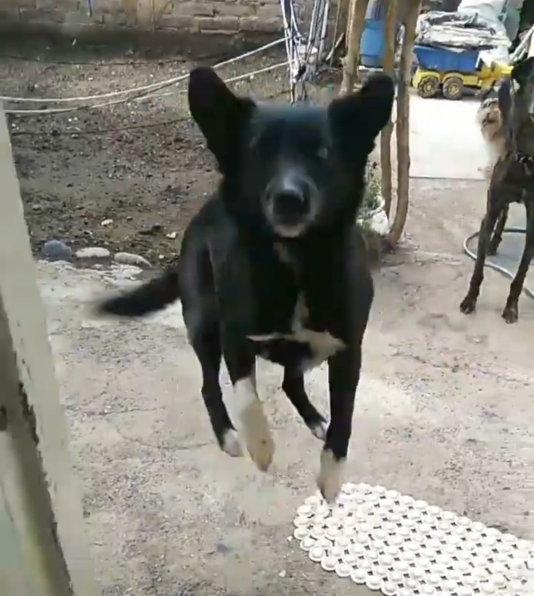
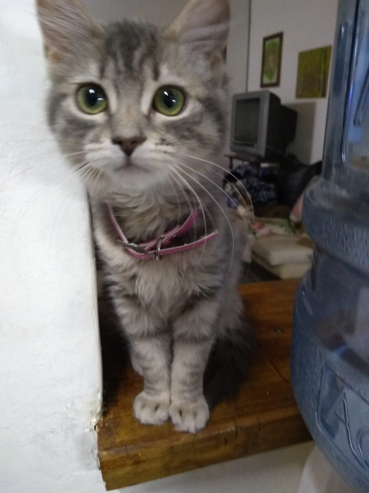
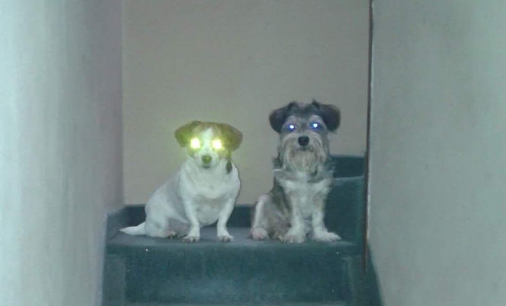
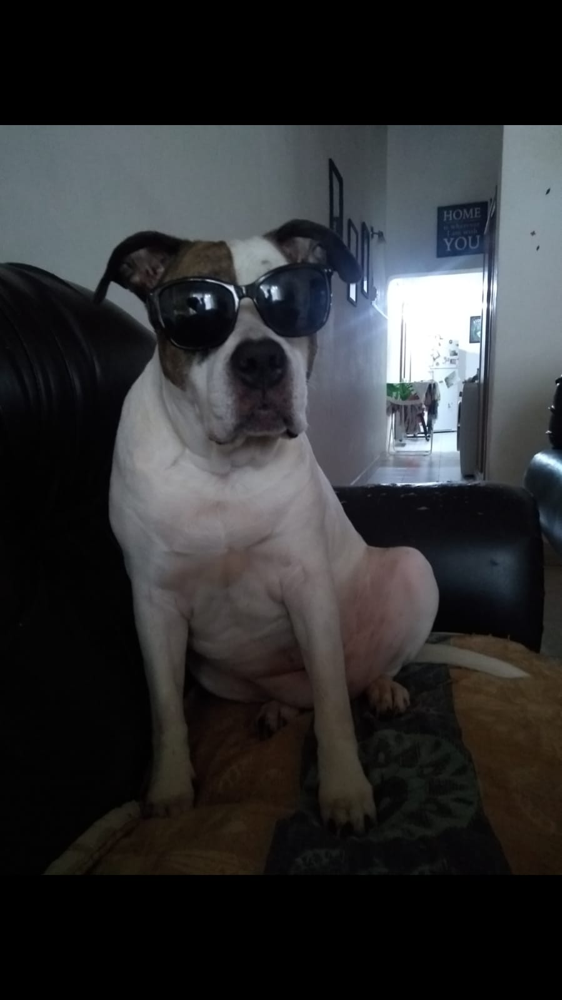
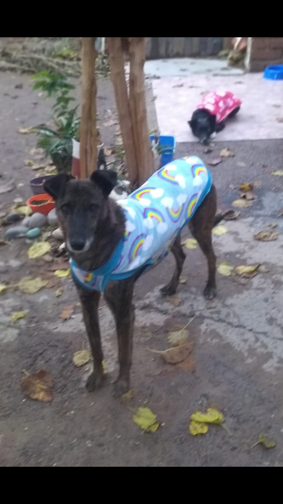
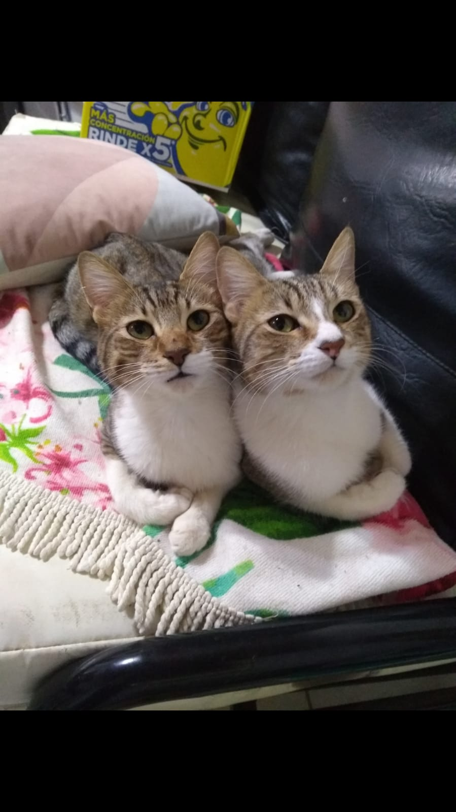

Perro volador extraviado
Perdido: 12 de octubre
Localidad: Cinco Saltos
Contacto: 299123456
Email: unemail@hotmail.com
Descripcion: "Adios humano mi planeta me necesita" Fueron las ultimas palabras de Chimuela antes de ser vista por ultima vez. Es negra y tiene guantes blancos y una mancha blanca en el pecho

Carmela perdida
Perdido: 4 de Mayo
Localidad: Cinco Saltos
Contacto: 299123456
Email: unemail@hotmail.com
Descripcion: Carmela se ausento de su hogar el pasado 4 de mayo y aun no tenemos novedades de ella. Es chiquita, gris atigrada y come mas que el perro del chavo del 8.

No estan poseidos
Perdido: 19 de Julio
Localidad: Cinco Saltos
Contacto: 299123456
Email: unemail@hotmail.com
Descripcion: Estos son Cacho y Corta se quedaron hasta tarde viendo "El pueblo de los malditos" por Isat antes de irse a dormir. Esta fue la ultima foto que les saque.

Lola Cage
Perdido: 1 de Enero
Localidad: Cinco Saltos
Contacto: 299123456
Email: unemail@hotmail.com
Descripcion: Salio a tirar facha en nochebuena y no volvio. Es pitbull, castrada y super docil.Si la encontras retenela y contactame. Le gustan las zanahorias

SuperPerro Perdido
Perdido: 12 de octubre
Localidad: Cinco Saltos
Contacto: 299123456
Email: unemail@hotmail.com
Descripcion:Flaco se ausento de su hogar hace 5 dias y no sabemos nada de el, dejo su capa en casa.
